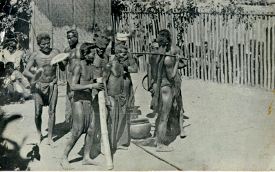

วิถีชีวิต : ชนเผ่าไทโส้

ประวัติความเป็นมา : ชาวไทยโส้เป็นกลุ่มชาติพันธ์หนึ่งในจังหวัดนครพนมที่มีปะวัติศาสตร์ยาวนานซึ่งชาวบ้านโพนจานเล่าว่าแรกเริ่มนั้นบรรพบุรุษของตนได้อพยพมาจากดินแดนฝั่ง
ซ้ายของแม่น้ำโขงบาตั้งรกรากบริเวณต้นน้ำ ห้วยกุดยางซึ่งบริเวณนั้นมีต้นยางใหญ่และมีรังผึ้งหลวงอาศัยอยู่เป็นจำนวนมาก ชาวบ้านจึงเรียกว่าบ้านฮ้างต้นผึ่ง เมื่อปี พ.ศ. 2260 ชาวบ้านได้อพยพไปทางเหนือ
และเปลี่ยนชื่อบ้านเป็น บ้านนาจาน ต่อมาเมื่อปี พ.ศ. 2300 ได้เกิดโรคระบาดร้ายแรง จึงพากันย้ายถิ่นฐานมาตั้งบริเวณที่อยู่ปัจจุบัน ซึ่งมีลักษณะพื้นที่เป็นเนินหรือโพน และมีต้นจานเป็นจำนวนมาก
จึงเรียกว่าบ้านโพนจาน ต่อมามีชาวไทยโส้บ้างส่วนได้อพยพมาสมทบแต่อยู่คนละฟากฝั่งท้องทุ่ง และได้รวมเอาชาวบ้านห่วยไร่เข้าเป็นหมู่บ้านเดียวกัน
ตั้งเป็นบ้านบงคำทำให้ชาวกะเลิงที่เคยอาศัยอยู่ในพื้นที่ระแวกนั้นแยกตัวออกไปทางทิศตะวันตก เป็นต้น
แหล่งท่องเที่ยวชุมชน และท่องเที่ยวเชิงวัฒนธรรม
ชาวไทยโส้บ้านโพนจานมีวิถีชีวิตความเป็นอยู่อย่างพอเพียงเคียงคู่ธรรมชาติและยังมีความเชื่อในเรื่องผีและอำนาจสิ่งศักดิ์สิทธ์เหนือธรรมชาติดังนั้นชนเผ่าไทยโส้ยังคงมีวิถีชีวิตความเชื่อและวัฒนธรรมประเพณีที่ดีงามอยู่คู่ชุมชนอย่างเหนียวแน่น ท่องเที่ยวเชิงวัฒนธรรมที่โดดเด่นเป็นอักลักษณ์ของชุมชน คือ การประกอบพิธีกรรมแชงชะนาม จะจัดขึ้นในช่วงเดือนมีนาคมถึงเมษายน นอกจากนี้ยังมียังมีดอนปู่ตา วัดโพนทราย และแหล่งท่องเที่ยวทางการเกษตร เช่น สวนยาพารา สวนพริก และยังมีแหล่งท่องเที่ยวใกล้ๆชุมชน เช่น พระพุทธรูปองค์ใหญ่ที่วัดศรีสว่างบ้านกลางจาน พระธาตุจำปา และพระธาตุโพนสวรรค์ บ้านโพนจา อำเภอโพนสวรรค์ จังหวัดนครพนม ได้รับการคัดเลือกให้เป็นหมู่บ้านท่องเที่ยวเชิงวัฒนธรรม ดังนั้นคณะกรรมการหมู่บ้านจึงได้ประชุมปรึกษาหารือเพื่อทำแพ็กเกจท่องเที่ยวเพื่อต้อนรับแขงที่มาเยี่ยมเยือน โดยมีโปรแกรมท่องเที่ยวของหมู่บ้านอีกด้วย
การประกอบอาชีพ
ชนเผ่าไทยโส้ประกอบอาชีพหลัก คือ การทำนา ทำสวน ทำไร่ อาชีพเสริม คือ การทอผ้า ซึ่งลวดลายผ้ามีความประณีตสวยงาม ลวดลายผ้ามีเอกลักษณ์โดยเฉพาะ ส่วนพ่อบ้านเน้นการหัตถกรรมเกี่ยวกับเครื่องใช้ในครัวเรือนและอุปกรณ์ทำมาหากิน เช่น กระติ๊บข้าว หวด กะกล้า ตะข้อง เป็นต้น
ความเชื่อ ประเพณี ความสำคัญ
ชาวไทยโส้จะมีความเชื่อในเรื่องผี และอำนาจเหนือธรรมชาติมาแต่อดีตซึ่งความเชื่อเหล่านี้ยังได้รับการสืบสอดอย่างเหนียวแน่นมาจนถึงปัจจุบัน จึงเป็นสาเหตุทำให้ชาวไทยโส้ ตั้งกุศโลบายในการประกอบพิธีกรรมที่เกี่ยวข้องกับการเคารพบูชาผีไร่ผีนา โดยเฉพาะพิธีกรรมแชงชะนามที่กระทำสืบทอดกันมาทุกปี อีกทั้งพิธีกรรมดังกล่าวยังเป็นกุศโลบายที่จะใช้ในการเริมสร้าง ความสัมพันธ์ภายในครอบครัว เนื่องจากเป็นพิธีที่พ่อแม่ลูกหลานจะอยู่ด้วยกันพร้อมหน้าพร้อมตากันและมีการแบ่งบทบาทหน้าที่ในการเตรียมประกอบพิธีอย่างชัดเจน พิธีเหยา เป็นพิธีกรรมที่ใช้ในการรักษาผู้ป่วย ซึ่ง ในอดีต เมื่อมีสมาชิกภายในครอบครัวเจ็บป่วย ชาวไทยโส้จะมีความเชื่อว่าเป็นเพราะผู้ป่วยไปทำผิดผีหรือล่วงเกิน ผีไร่ ผีนา ผีป่า ผีเขา พิธีกรรมแชงชะนาม เป็นพิธีกรรมที่เชื่อมโยงมาจากพิธีเหยา ที่ชาวไทยโส้บ้านโพนจานกระทำเพื่อแสดงความกตัญญูกตเวทีและความเคารพต่อผีไร่ ผีนา ผีป่า ผีเขา และผีบรรพบุรุษ ที่ลูกแก้วเชื่อว่าได้ดลบันดาลให้ตนเองหายเจ็บป่วยจากอาการต่าง ๆ และถื่อว่าเป็นการแสดงความเคารพและขอบคุณแม่แก้หรือหมอเหยา การแสดงโส้ทั่งบั้ง โส้ทั่งบั้งถือว่าเป็นเอกลักษณ์ของชาวไทยโส้บ้านโพนจาน เป็นพี่ธีการในการบวงสรวงวิญญาณของบรรพบุรุษประจำปีหรือเรียกขวัญและรักษาผู้ป่วยกับพิธี ขางกระมูด ในงานศพกับพิธีเหยา ในการเรียกขวัญ ภูมิปัญญาชาวบ้านเหยาเพื่อนรักษาโรคต่างๆ ซึ่งเป็นความเชื่อตั้งแต่เดิมมา